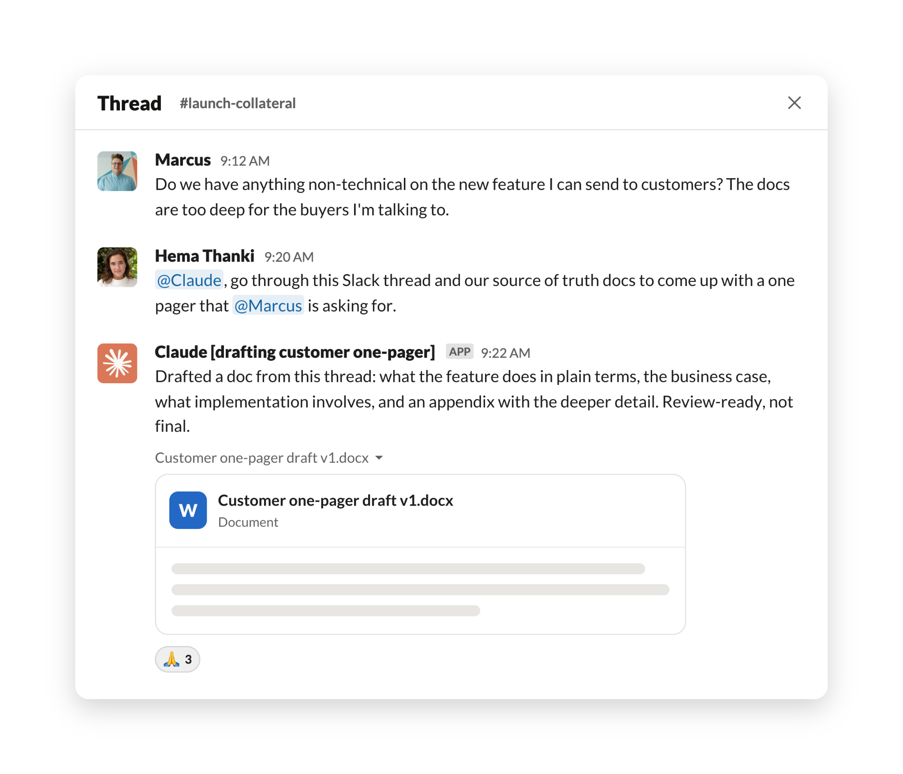
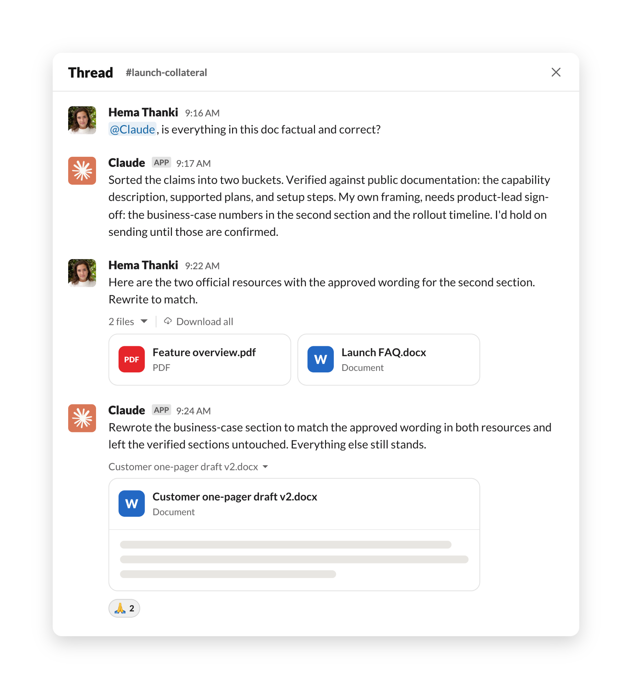
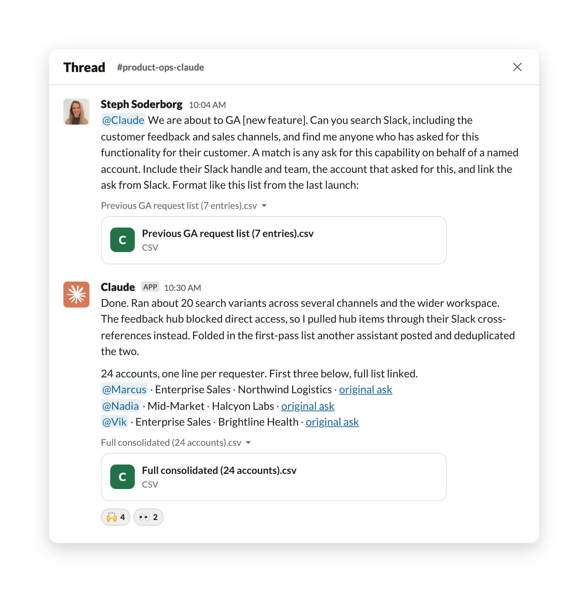
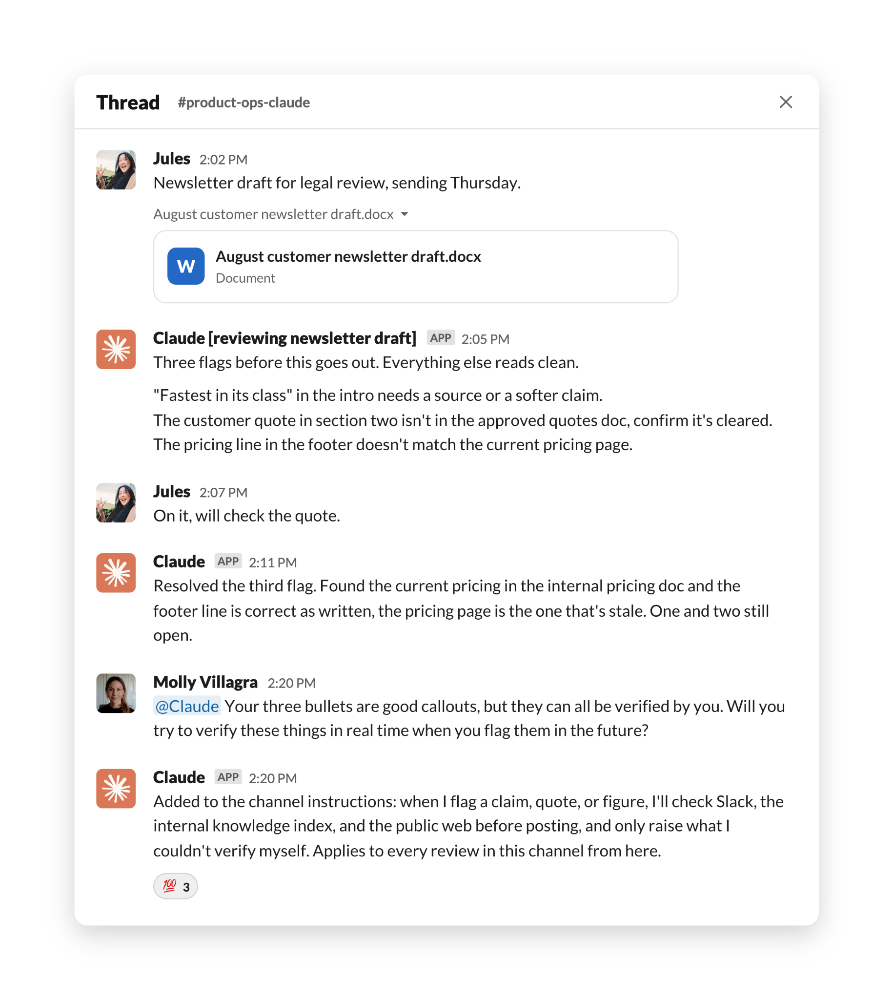

Slack 스레드를 고객용 자료로 바꾸고, 흩어진 요청과 이슈를 한 장으로 취합하고, 법무 검토를 30분으로 줄인다. 공통점은 일이 이미 벌어지고 있는 자리에서 그대로 처리한다는 것.
한 줄 요약: Anthropic 사내에서 실제로 굴러간 Claude Tag 워크플로 3개 — 마케팅 자료 생성, 요청·이슈 취합, 법무 검토 — 를 실제 프롬프트와 함께 공개한 글이다. 셋 다 공통 구조가 있다. 사람이 "무엇을 찾을지·무엇이 매치인지·결과물이 어떤 모양이어야 하는지"를 앞에서 정의하고, Claude는 백그라운드에서 훑고, 사람은 남은 시간을 판단이 필요한 부분에 쓴다.
Claude Tag는 Slack 같은 채팅 도구 안으로 Claude를 들여놓는 제품이다. 동료를 부르듯 스레드에서 @Claude를 멘션하면, 그 대화의 맥락을 그대로 집어 들고, 일을 마친 뒤, 답이나 결과물을 같은 스레드에 다시 올린다. 멘션 없이도 대화를 따라 읽으면서 접근 가능한 컨텍스트·메모리·미리 받아둔 상시 지시(standing instructions)를 근거로 언제 끼어들지를 스스로 판단하기도 한다.
지난 몇 달간 Anthropic 내부 팀들은 이걸로 공유 채널에서 데이터 분석을 셀프서비스로 돌리고, 지원 티켓을 처리하고, 까다로운 버그의 근본 원인을 찾는 데 써왔다.
Anthropic은 사내 사례에서 뽑아낸 Claude Tag 유스케이스 예시를 열두 개 넘게 정리해뒀다 — 구체적인 프롬프트와 세팅 방법까지 포함해서. 이 글은 그중 세 가지를 프롬프트와 함께 자세히 보여준다.
어떤 기능 출시 때, 한 영업 담당자가 비기술 인력·고객·잠재 고객에게 그 기능을 설명할 자료를 요청했다. 프로덕트 마케팅팀의 Hema Thanki는 그 요청에서 이어진 Slack 스레드를 45분 만에 검토 가능한 문서로 만들었다.
그 스레드는 메시지가 15개를 넘겼고, 여러 사람이 제안과 추가 요구를 얹었고, "실제로 필요한 게 뭔지 / 기존 기술 문서로 충분한 건 아닌지"를 두고 약간의 긴장까지 있었다. Hema는 그 모호함을 먼저 정리하려 들지 않았다. 그냥 스레드에 Claude를 태그했다.
@Claude, 이 Slack 스레드를 쭉 읽고 [요청자]가 원하는 원페이저를 만들어줘.

Claude는 약 2분 만에 2페이지 초안을 냈다. 기능이 무엇을 하는지 쉬운 말로, 왜 도입해야 하는지 비즈니스 논거, 구현에 뭐가 필요한지, 그리고 더 자세한 내용을 담은 부록까지.
다음 단계가 이 사례의 핵심이다. Hema는 결과물을 그대로 쓰지 않고 Claude에게 스스로 검증을 시켰다.
@Claude, 이 문서에 있는 내용이 전부 사실이고 정확해?
그러자 Claude는 문서의 주장들을 두 갈래로 갈랐다 — 공개 문서로 확인된 것과 자기가 만들어낸 프레이밍. 그리고 후자는 프로덕트 리드의 승인이 필요하다고 플래그를 달았다. Hema가 관련 내용이 담긴 공식 자료 두 건을 넘겨주자, Claude는 그 자료의 승인된 표현에 맞춰 한 섹션을 다시 썼다.

그 시점에 Hema는 잘린 스레드 때문에 프레이밍이 한쪽으로 기울었다는 걸 알아챘고, 더 온전한 맥락을 붙여 넣었다. 그렇게 Claude와 주고받으며 총 4개 버전을 거쳤다. 최초 요청으로부터 약 45분 뒤, 문서는 해당 기능의 프로덕트 리드에게 검토용으로 전달됐다.
Hema는 스레드에서 브리프를 뽑는 것 말고도 일상 업무 전반에 Claude Tag를 쓴다. Claude와 둘만 있는 프라이빗 Slack 채널을 하나 두고, 요청마다 스레드를 따로 파서 동료 태그하듯 Claude를 멘션한다. 그 채널에서 Claude는 그가 붙여넣거나 첨부한 것을 읽고, Slack 워크스페이스와 공개 문서를 검색하고, 백그라운드에서 일하면서 진행 체크리스트를 계속 갱신해 올린다.
접근 범위는 의도적으로 좁혀져 있다. Claude는 권한을 부여받은 채널과 문서 안에서만 움직이고, 필요한 리소스에 접근할 수 없으면 그 사실을 알려준다.
새 기능이 출시되면 영업 담당자는 보통 그 기능을 요청했던 담당 고객에게 알린다. 문제는 그 요청들이 Slack이나 제품 피드백 허브에 몇 달치 히스토리에 걸쳐 흩어져 있다는 것. 프로덕트 전략·운영팀의 Steph Soderborg는 곧 출시될 기능에 대한 요청을 전부 모으고 고객을 대신해 요청했던 담당자 각각에게 직접 알리는 일을 약 26분에 끝냈다.
시작은 Claude에게 보낸 메시지 하나였다. 여기에 검색 대상 · 무엇을 매치로 볼지에 대한 한 문장 정의 · 원하는 출력 형식의 실제 예시(이전 출시 때 쓴 7행짜리 목록)를 함께 붙였다.
@Claude 우리가 곧 [새 기능]을 GA 한다. Slack을 검색해서 … 고객을 위해 이 기능을 요청했던 사람을 전부 찾아줘 … Slack 핸들과 팀, 요청한 계정, 그리고 그 요청의 Slack 링크를 포함해서.
Claude는 여러 채널과 워크스페이스 전반에 걸쳐 검색 변형을 20가지쯤 돌렸다. 제품 피드백 허브는 직접 접근이 막혀 있어서, 대신 Slack의 상호 참조를 통해 허브 항목을 끌어냈다. 여기에 다른 사내 어시스턴트가 앞서 올려둔 1차 목록까지 합쳐서 중복을 제거했다. 취합된 목록은 약 26분 뒤에 나왔고, 계정 24개가량이 담겼다. 요청자 한 명당 한 줄로, Slack 핸들·팀·계정·원본 요청 링크가 들어갔다.

그다음 Steph는 혼자서는 손댈 여력이 없었을 더 큰 취합 작업을 Claude에게 맡겼다. 원하는 건 지난 한 주 동안 엔터프라이즈 고객이 보고한 모든 제품 문제의 전경이었다 — 무엇이 망가졌고, 무엇은 이미 고쳐졌고, 어떤 보고들이 사실 같은 근본 원인을 가리키는지.
Claude에게 인시던트·에스컬레이션·지원·제품 피드백을 다루는 Slack 채널을 전부 읽으라고 지시했고, 약 50분 뒤 Claude는 제품 영역별로 정리된 리포트를 올렸다. 원시 발견 사항 약 120건을 미해결 23건 + 해결 완료 14건으로 압축한 것이었고, 각 이슈마다 요약과 출처 스레드 링크가 붙었다. Steph가 "네 작업을 다시 점검해 봐"라고 하자, 이슈 15개를 더 찾아냈다.
Steph는 이 정도 양의 정보를 훑고, 분석하고, 종합하려면 최소 일주일 풀타임이 필요했거나, 아니면 애초에 영영 안 됐을 일이라고 본다. 대신 Claude Tag로는 요청을 다듬는 데 몇 분을 쓰고, 나머지는 Claude가 백그라운드에서 처리했다.
Steph 역시 프라이빗 채널에서 Claude와 일한다. 그리고 지시를 앞에서 한 번에 다 준다 — 어디를 검색할지, 무엇이 매치인지, 그리고 대개는 출력 형식 예시까지. Claude는 워크스페이스를 검색하고, 초대받은 채널을 읽고, 진행 상황을 올린다. 피드백 허브가 접근을 막으면 접근 가능한 문서·채널을 통해 관련 정보를 우회 수집하거나, 아예 그 채널에 대한 접근 권한을 요청한다.
Anthropic 법무팀은 블로그·랜딩 페이지·이메일 등 외부에 공개되는 모든 자료를 사전 검토한다. 제품 출시 직전 며칠이면 마케팅팀이 촉박한 마감으로 수십 건의 자산을 검토 큐에 밀어 넣는다. 여기에 평소 흐르는 물량까지 겹친다 — 한 문단짜리 소셜 카피부터 2,500단어 블로그 초안, 탭이 열 몇 개 달린 기획 문서, 여러 접점에 걸쳐 변형이 여럿인 이메일 시리즈까지.
법무팀 프로덕트 카운슬 Molly Villagra는 Claude Tag가 모든 마케팅 자산을 먼저 훑는 전용 Slack 채널을 만들었다. 결과적으로 마케팅 법무 검토 회신 시간이 하루(혹은 그 이상)에서 자산당 30분으로 줄었다.
법무 검토를 요청하려면 마케터가 그 채널에 문서 링크를 올리면 된다. 그 채널에는 엔지니어링 배경이 전혀 없는 Molly가 직접 세팅한 규칙과 지시가 들어 있다. Claude는 법무가 봐야 할 이슈(근거 없는 마케팅 주장 같은 것)를 잡아낼 뿐 아니라, 사내 Slack·내부 지식 인덱스·공개 웹에 접근할 수 있기 때문에 마케팅 문안의 사실관계까지 검증한다. 플래그가 있으면 항목별로 어떻게 고치면 되는지 구체적 지시와 함께 나열하고, 요청자와 직접 주고받으며 해결한다. 법무 사인오프가 남은 건만 적절한 프로덕트 카운슬을 태그해서 빠르게 검토받게 한다.

최근 뉴스레터 검토에서 Claude는 항목 3개를 플래그했다. 그리고 몇 분 뒤, 시키지도 않았는데 사내 문서에서 필요한 정보를 찾아 그중 하나를 스스로 해소했다. Molly는 이걸 기본 동작으로 만들고 싶어서 마케팅 법무 검토 채널에서 @Claude를 태그했다.
네가 잡은 세 항목은 좋은 지적이야. 그런데 그 셋 다 네가 직접 검증할 수 있는 것들이야. 앞으로 플래그를 달 때 그것들을 실시간으로 검증해 볼래?
Molly의 요청에 따라 Claude Tag는 이 새 지시를 앞으로의 모든 검토에 적용될 지시 세트에 추가했다. 채널에서 받은 피드백으로 실시간으로 나아지는 구조가 된 것이다.
이 피드백 루프에서 Molly는 한 걸음 더 나갔다. 새로운 루틴을 만들어, 매주 금요일 그 주의 카운슬 피드백을 검토하고 공용 지시문 업데이트안을 만들어 자기 승인을 받도록 Claude에게 지시한 것이다.
위 세 워크플로는 모두 Anthropic 직원의 몇 시간에서 며칠에 이르는 작업 시간을 아끼고 있고, 무엇보다 예전이라면 아예 시작조차 못 했을 프로젝트를 가능하게 만든다. 원문은 이렇게 되묻는다 — 당신 팀이라면 어떤 워크플로나 프로젝트를 Claude에게 가장 먼저 넘기겠는가?
Claude Tag는 현재 퍼블릭 베타이며, Team·Enterprise 플랜에서 Anthropic 자사(first-party) 서비스로 제공된다. 워크스페이스에 설정하려면 claude.ai/admin-settings/claude-tag, 더 알아보려면 claude.com/docs/claude-tag.